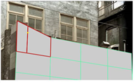

the highlighted faces.
To edit edges and edge loops:
| 1. | Activate Edit Mode by selecting 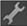 from the ModelBuilder toolbar. |
| 2. | Set the selection mode menu to either Select edges or Select edge loops in the ModelBuilder toolbar and select one or more edges or edge loops on the object. |
TIP: An edge loop is a string of connected edges across the model. Often, the last edge meets again with the first edge, forming a loop. In ModelBuilder, the loop follows the middle edge in every intersection that has an even number of edges. The loop ends when it encounters an intersection with an odd number of edges.
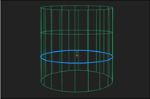
Edge loops can help you produce more natural deformations for organic models that are animated. They work best when you’ve got a mesh that’s mostly made up of four-sided polygons, known as quads.
| 3. | Edit your selection as necessary: |
• To translate, rotate, or scale the selected edges or edge loops, drag the transform handles that appear on them. To move the pivot point for the transform handles, press Ctrl/Cmd+Alt while dragging on the center of the transformation overlay.
|
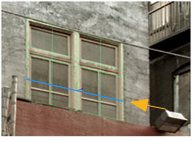 |
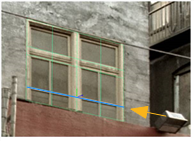 |
| Selected edges. | Translating the selected edges. |
TIP: If necessary, you can also use the controls at the top of the Viewer to set the initial position and alignment of the transform handles (that is, the position used whenever you change the selection). For more information, see Setting the Initial Action Center for Translate, Rotate, and Scale.
• To carve the selected edges, right-click on them and select carve. A colored border appears around the Viewer window to indicate that the action is in progress. Click on an edge or vertex to begin a carve. All of the surrounding faces are highlighted in red. Click anywhere inside a highlighted face, or on an edge or vertex of a highlighted face, to carve an edge between the previous vertex and the place you just clicked.
|
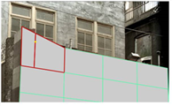 |
|
| Highlighted faces. | Carving a new edge inside the highlighted faces. |
To carve out a freehand edge, hold down Ctrl/Cmd+Shift and drag.
• To extend your current edge selection along loops, select select edge loop from the right-click menu. This is the same as activating Select edge loops and clicking on an edge.
| 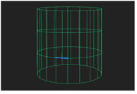 |
|
| Original selection. | Select edge loop. |
• To extend your current selection to form a ring around the face or the entire shape, choose select edge ring from the right-click menu.
|
|
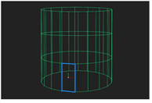 |
| Original selection. | Select edge ring. |
If the starting edge is part of the boundary for an entire shape, this selects all edges along that boundary.
|
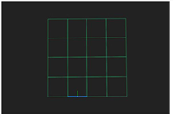 |
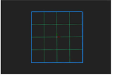 |
| Original selection. | Select edge ring. |
Otherwise, it selects all edges around the face that the starting edge belongs to.
|
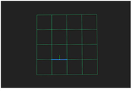 |
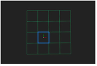 |
| Original selection. | Select edge ring. |
• To extrude the selected edges or edge loops, select extrude from the right-click menu and drag. This stretches the selected edges or edge loops into a three-dimensional polygon.
|
|
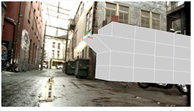 |
| A selected edge. | Extruding the selected edge. |
• To bevel the selected edges or edge loops, select bevel from the right-click menu.
A colored border appears around the Viewer window to indicate that the action is in progress.
At the top of the Viewer, use relative inset to define how far back along the surrounding edges to start the bevel from: 0.0 means no distance and 1.0 means at the opposite end of the edge. The default is 0.1, meaning the beveling starts 1/10th of the way back along each edge.
Set round level to the number of times to repeat the initial bevel, effectively rounding the edges. A value of 0 just does the initial bevel, a value of 1 bevels the output of the initial bevel; a value of 2 bevels the bevel of the initial bevel, and so on.
When you’re happy with the values you’ve entered, press Return to apply the bevel.
|
|
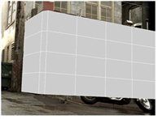 |
| Selected edges. | Beveling the selected edges. |
Beveling is like extruding the selected edges, except that the resulting polygons have smooth edges and corners. You may want to use beveling to add realism to your model, as real-world objects rarely have perfectly sharp corners.
• To divide the selected edges or edge loops into segments of equal length, select subdivide. A colored border appears around the Viewer window to indicate that the action is in progress. Use the segments control on top of the Viewer to set the number of segments, and press Return to complete the action.
• To delete the selected edges or edge loops, select delete edges from the right-click menu (or press Delete).
|
|